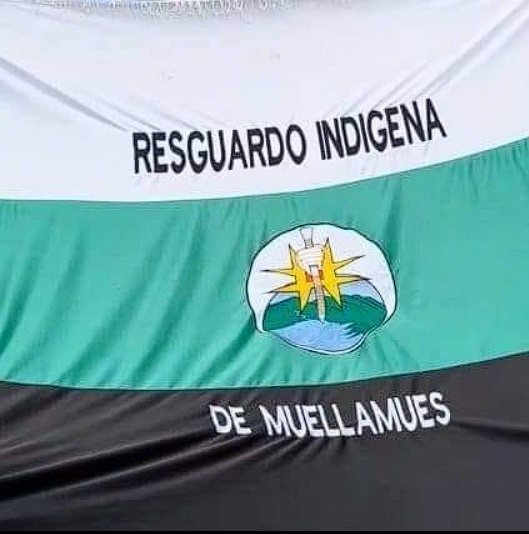

Catálogo interactivo de las plantas medicinales y terapéuticas del pueblo Pastos. Un puente digital para revitalizar la memoria viva de nuestras mayoras, parteras, yerbateros y médicos tradicionales en las faldas de los volcanes andinos.
En la cosmovisión del pueblo indígena de los Pastos, la salud no es un estado individual aislado sino el equilibrio armónico entre el cuerpo humano, el cosmos, el territorio y los espíritus de la naturaleza. Las enfermedades se conciben a partir de desbalances térmicos y energéticos:
Cuando el cuerpo sufre por "enfriamiento", "mal aire" o "malviento" de las quebradas y los páramos, se restablece el orden mediante plantas cálidas (como la Chilca, la Ruda, la Altamisa o el Romero). Cuando el organismo padece fiebres, inflamaciones o calor estomacal, se templa con plantas frescas (como el Llantén, la Sábila o la Manzanilla).
Espacio territorial recuperado en Muellamués dedicado a la siembra, recolección y resguardo pedagógico de la flora medicinal tradicional.
Modelo de salud intercultural donde conviven la medicina científica y el saber ancestral de médicos tradicionales, parteras y sobanderos.

Insignia sagrada de la autonomía comunitaria y la dignidad del Pueblo de los Pastos.
⚪ Franja Blanca (Superior): Espiritualidad, pureza, la niebla tutelar de los páramos altos y la paz comunitaria.
🟢 Franja Verde (Central): La Madre Tierra (Pachamama), las huertas de plantas medicinales, las quebradas y la soberanía alimentaria.
⚫ Franja Negra (Inferior): La tierra negra fértil del altiplano, la firmeza, resistencia y memoria histórica de los mayores.
Bastón de Mando y Cerros Tutelares: El escudo central custodia el bastón de autoridad ancestral de las autoridades del Cabildo, erigido ante el Sol y las aguas de vida.

Estrella de ocho puntas que representa el equilibrio biocultural y los ciclos astronómicos de la siembra andina.
Ubicación: Guachucal, Nariño (altiplano y páramos de 3.000 a 3.800 msnm).
"El saber de las plantas no es propiedad individual, sino herencia colectiva del pueblo para sanar el cuerpo y defender la vida en el territorio."